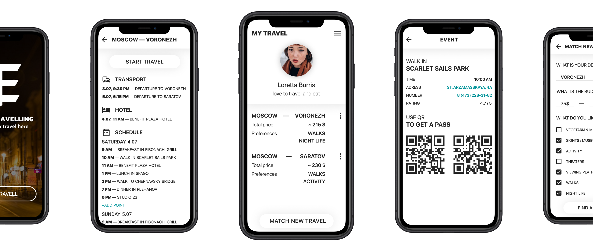
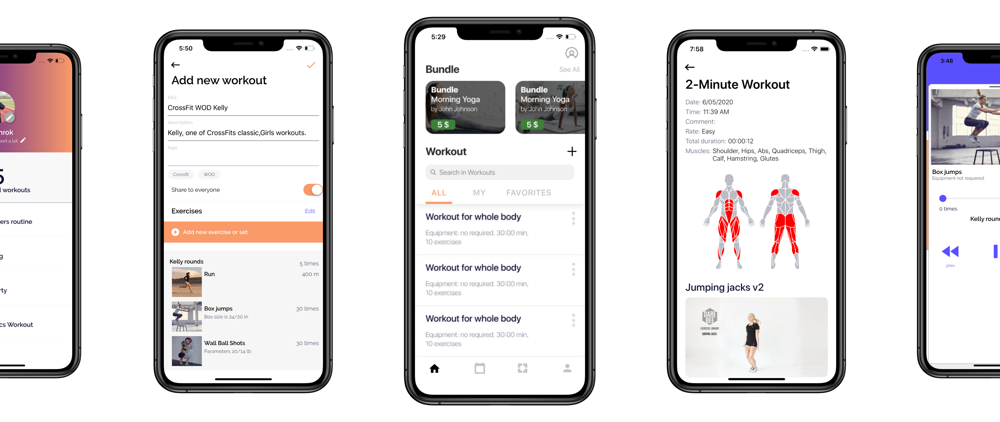
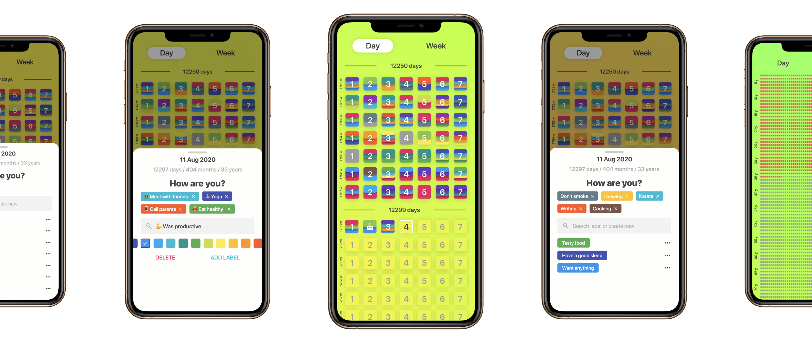

Telegram: t.me/MaxKulakov
Behance: behance.net/KulakovMax
At the moment I am a product designer in two start-up projects, I live in Saratov and I am a third year student at SSU, at the Faculty of Computer Science and Information Technology.
I have been actively designing since 2018. I've started as a graphic designer and over time realised that the topic of interface and the product design in general was of much more interest. So in the spring of 2019 I've decided to expand my specialisation and cover a new area. During this time, I managed to participate in several projects, such as: Venrok sports app, Lifetables habits tracker and Easy-traveling travel selection.
At the same time, I've been working with various companies on visual and identity issues and managed to implement cases for three events of Youcon Events Group, Jedi.university University, SSU CSIT, SSU Rebranding, Vladimir Novikov's Personal Dental Center, LoyalMed loyalty service and beyond.
I have begun my journey in product design with the easy traveling project, which started at the hackathon. The service allowes you to choose a weekend trip to any part of Russia for a specified budget.
The work on the project consisted of thinking through the functionality and visuals from scratch and how the user would interact with the service, what would be a priority for him and what result he should get for his trip, his schedule during the trip and upon returning home, as well as the system of bonuses and feedback.
One of the tour operators planned to join the project, but, alas, everything ended at the stage of discussing mutual integration, and the team decided to take a break in development.

The Venrok sports app ( apps.apple.com/il/app/venrok-workouts/id1479561440) was the first serious project in terms of length and complexity. I've joined the development team after they released the first version of the application, created purely by their forces. At that time they realized the lack of a designer in the team.
Venrok positions itself as a sports app for professional athletes and, unlike competitors, allows you to customize your workout in the most detailed way. To the basic interface, which included a list of workouts and exercises, and a basic music player, we have added onboards, advanced registration, a subscription model, functional customization for each exercise, constants, synchronization with google fit and apple health, profile extension, and application customization, bundles and programs with the ability to create them for coaches, a feed and a user tracking system, the creation of a communities in a sports area of interest, advanced statistics with the display of many parameters, including a visual display of the muscles involved in the training process.
In addition, I've been engaged in designing the page for the stores, updating the identity, thinking through the creatives for advertising campaigns, researching people feedback to identify gaps in the user experience and improving the interface. At the moment, this project is already about two years old and the work on it continues.

The next project was the Lifetables habit tracker ( apps.apple.com/us/app/lifetables-motivation-habits/id1527590620). People are interested in observing the statistics of their lives, mentally relaxing at the sight of the results they have achived. Therefore, together with one of the developers of the previous project, a new application was created.
Unlike Venrok, my work on this project was carried out from the very beginning. I went through drawing a user flow in a notebook, conducting tests on real people with prototypes of the first release, and then adding and fixing functions. The work on this project still continues.
